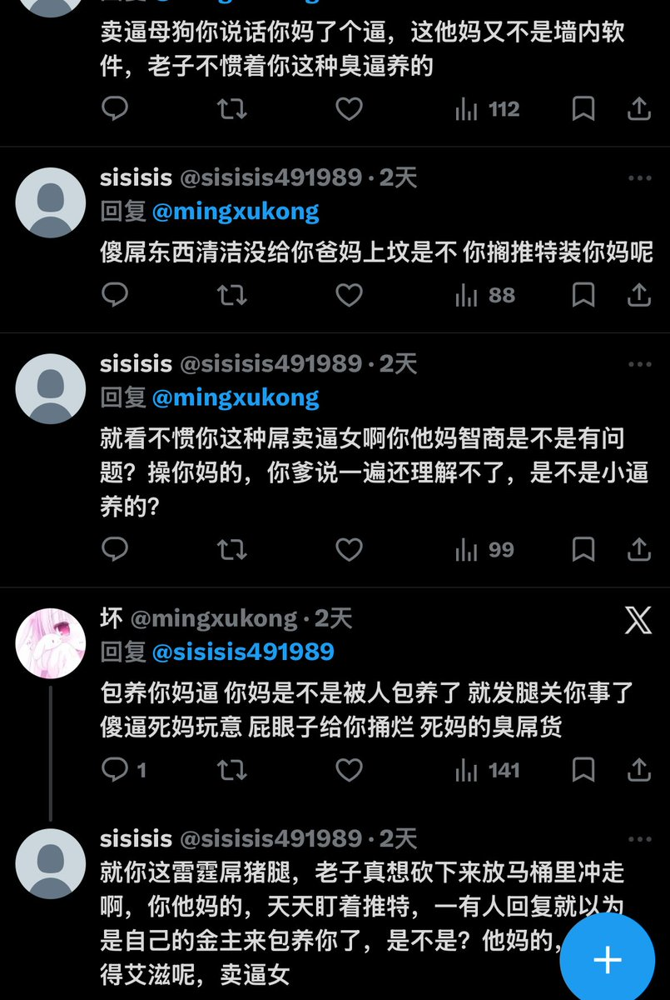

遥
@Miiharukawa
嗯嗯我知道你，你小时候因为自卑所以只能去揪小女孩辫子找存在感，妈妈只会骂你，遇到的女生都对你避之不及，你的胆小导致你只能自卑地打开手机上网辱骂女生以此获得卑劣的快感，给人一种买廉价充气娃娃润滑半天扎不进去急眼了在房间里狂顶结果气球爆炸炸到蛋的感觉。怪不得会对这个世界有这么多怨言。

sisisis
@sisisis491989
@Yenian001 @Miiharukawa 你个臭婊子你还搁这儿发上了，你还想要处男，顶多给你一个30岁艾滋大叔给你玩玩得了😹😹😹😹，卖逼你就卖逼，还搁那推特装上纯洁，装上深情了 你装你妈的七彩螺旋大逼呢